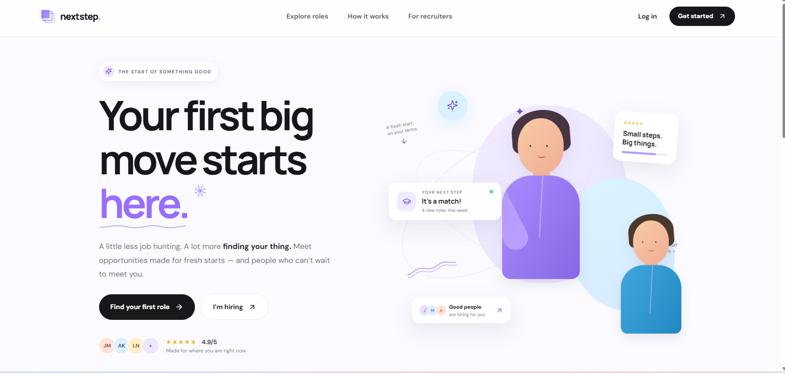

DEVELOPMENT
From responsive interfaces to backend logic, I build practical applications with clean, maintainable code. Bringing ideas to life through Java, C#, JavaScript, and React.
IT Graduate
Developer & Data Enthusiast
I build thoughtful software and data-driven solutions that turn complex problems into clear, useful experiences. Curious by nature. Driven by real-world impact.
From responsive interfaces to backend logic, I build practical applications with clean, maintainable code. Bringing ideas to life through Java, C#, JavaScript, and React.
I connect the dots between raw data and meaningful decisions. Working with SQL, Python, and Azure to build pipelines, model data, and uncover useful insights.
Connecting people.
Creating possibilities.

A microservices recruitment platform where candidates browse, save, and apply for opportunities, while recruiters publish roles and manage applications. Includes JWT-based roles and an administrator-only Security Operations Centre for event monitoring, rule-based alerts, and graph-based evidence retrieval.
Built a full end-to-end data warehouse using SQL Server to consolidate ERP and CRM sales data into a unified analytical model. Applied Medallion Architecture (Bronze / Silver / Gold layers) with thorough data quality engineering — NULL handling, deduplication, standardisation, normalisation, and enrichment. Delivered SQL-based BI analytics covering customer behaviour, product performance, and sales trends.
A fully functional web platform for North-West University students to connect, share resources, and stay updated on campus activities. Built with a focus on responsive design, performance, and user experience.
End-to-end Azure streaming pipeline for real-time fraud detection. Ingests transaction data through Event Hubs, processes via Stream Analytics, stores in Cosmos DB, and visualises with Power BI dashboards.
Complete dealership management system covering frontend GUI, backend business logic, and database design. Contributed across the full stack — from database architecture to UI implementation.
Developed backend functionality for a real-time text messaging application. Implemented communication protocols and message-handling logic using the .NET framework and XML data structures.
A Q-learning agent for a Southern African card game, developed for Intelligent Systems at North-West University. Explores simulated self-play, reward design, and strategy evaluation against random and greedy opponents, with Python game logic and an HTML game interface.
More code, experiments, and projects on GitHub.
Browse all repositories ↗I am Thapelo Fortuin, an Information Technology graduate from Kimberley, Northern Cape. Growing up in a resilient family, I developed a strong drive to learn and excel — consistently achieving top academic results, including recognition in Computer Applications Technology and Mathematics.
My passion for technology started early, helping my mother with her devices. Since then, I have dedicated myself to software development, data engineering, and cloud-native systems. I thrive on solving complex problems creatively and delivering high-quality, measurable results.
I am a reliable and adaptable team player with experience leading technical workstreams, communicating across disciplines, and voluntarily extending my scope to support those around me. I continuously strive to stay ahead of emerging technologies and push the boundaries of what is possible.
Specialising in AI, data engineering, cloud-native systems, and intelligent systems. Currently completing dissertation on AI-assisted data cleaning.
Focused on software development, database systems, web development, and data analysis.
Achieved top academic results.
Supported undergraduate students in understanding core Object-Oriented Programming principles. Facilitated debugging sessions and collaborated with lecturers to improve support materials.
Participated in STEM leadership programmes, achieving 100% commitment certificates. Developed teamwork, analytical, and problem-solving skills.
I am actively seeking graduate programme opportunities and internships in IT, data engineering, AI, and software development. If you have an opportunity or just want to connect, I would love to hear from you.
Download CV →